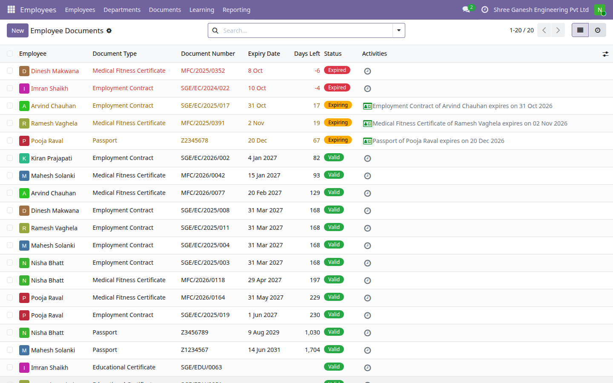
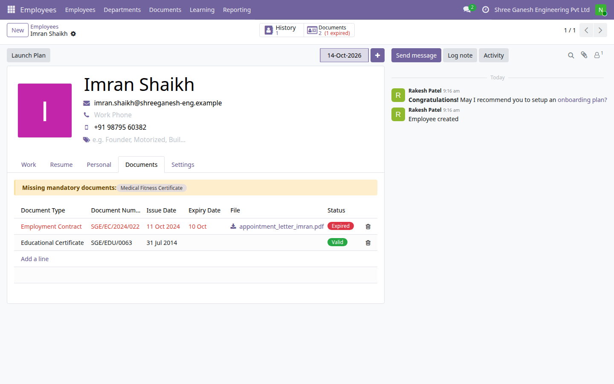
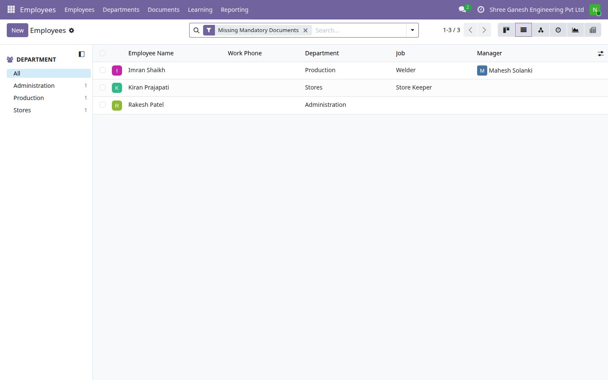
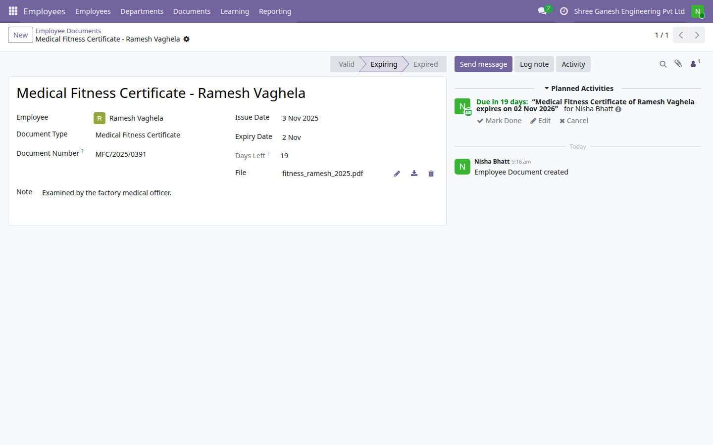
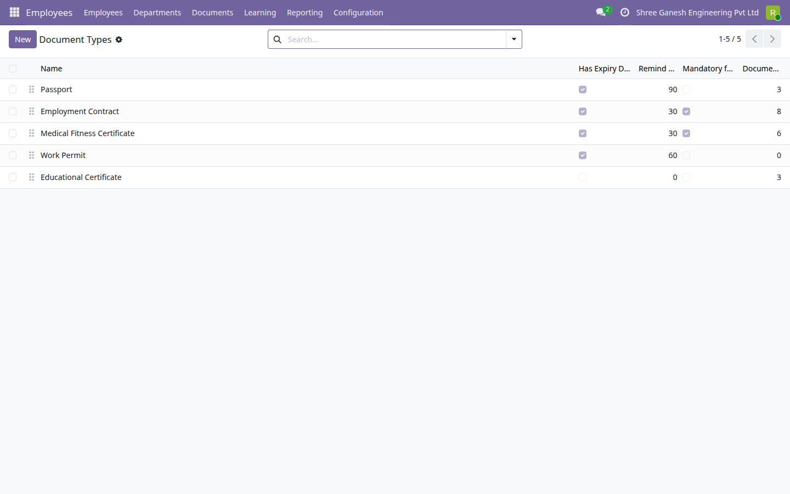

Passports, employment contracts, work permits, licences: every employee holds a handful of papers that run out, and the day one lapses is usually the day someone notices. This module keeps each document on the employee record with its scan, works out whether it is valid, expiring or expired from the dates, and sends the HR responsible an activity before it is too late. A filter on the employee list shows who still has not handed in a mandatory document.

All employee documents with expiry date, days left and status: two expired, three expiring with their reminders, the rest valid.

An employee's documents: an expired contract, the Documents button showing 2 (1 expired), and the missing mandatory medical certificate flagged.

The Missing Mandatory Documents filter on the employee list.

A medical fitness certificate expiring in 19 days, with the reminder activity scheduled for the HR officer.

Document types with their expiry flag, reminder window in days and mandatory flag.
Each type says whether it carries an expiry date, how many days ahead HR should be reminded, and whether every employee must hold one. Passport, Employment Contract, Work Permit and Educational Certificate are installed as a starting point.
Type, number, issue and expiry dates, the attached scan and a note, on a Documents tab of the employee form and behind a smart button that counts them and flags how many have expired.
The status follows the dates: Expiring once today is within the type's reminder window, Expired the day after the expiry date. Today is counted in the employee's timezone, so a document that expires today shows Expiring, not Expired, until the employee's midnight.
A daily scheduled action refreshes every status and schedules exactly one activity per expiring document for the employee's HR responsible, or for a fallback HR officer chosen in Settings. Only someone who can open the document is ever assigned, departed employees raise none, and running the job again never duplicates a reminder.
Enter the new dates and upload the new scan on the same record. The old file is replaced, the status returns to Valid and the open reminder is cleared.
The employee list gains Missing Mandatory Documents and Expired Documents filters, and the employee form names the mandatory types the person still lacks.
E-Way Bill Expiry Watch (India) · Indian Financial Year Numbering · GST Outward and Inward Summary (India) · Rupee Amounts in Words (Lakh and Crore) · Indian Invoice Print Extras · MSME Vendor Payment Tracking (India) · India Partner Identifier Validation · Indian Payroll Components (PF, ESI, PT) · India TDS Rate and Deduction Register · UPI Payment QR on Invoices (India) · Fixed Asset Register (Lite) · Branches (Lite) · Account Budgets (Lite) · Knowledge Base (Lite) · Label Designer (Lite) · Material Request (Lite) · Password Vault (Lite) · Proforma Invoice · Support Tickets (Lite)
Need the full version? The paid drkds Employee Documents and Compliance app adds checklists per job and department, portal self-service upload with HR approval, renewals and escalating reminders to HR, the employee and the manager.
Odoo 19 Community · Licence LGPL-3 · Free and open source
Part of the drkds Indian SME suite for Odoo 19 Community.
Support: jyotinboghani@gmail.com · drkdsinfo.com